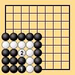
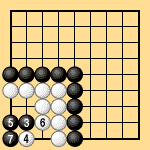
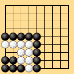
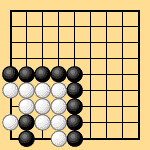

| 6.10 Unstable Seki: Thousand-Year Ko |
|---|
| In Dia. 6-15-1, if Black does nothing the position is a seki, but if Black plays 1, the result is a thousand-year ko as shown in Dia. 6-15-2. After capturing and connecting the ko to create a seki as in Dia. 6-15-3, Black can destroy this seki and create a new seki as shown in Dia. 6-15-4. |
|  |  |
| Dia. 6-15-1 | Dia. 6-15-2 |
|---|---|
|  |  |
| Dia. 6-15-3 | Dia. 6-15-4 |
| Even though the position in Dia. 6-15-1 is almost unimaginable in actual games, it must be considered when rules are studied. If the position in Dia. 6-15-1 exists together with other black ko threats that White cannot eliminate, then Black can destroy the seki, create a thousand-year ko, and capture White. This position should of course be resolved by actual play. |